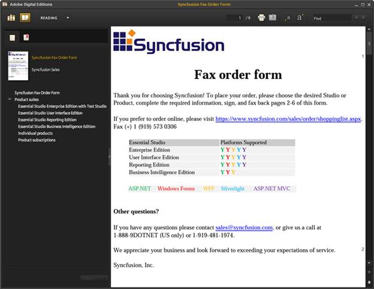
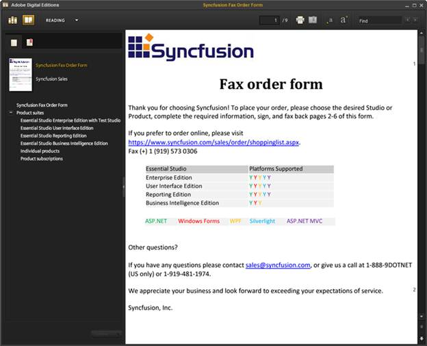
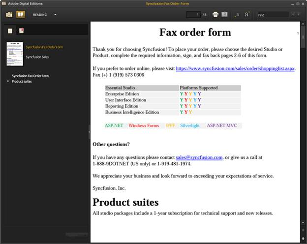

EPub is the short form of Electronic Publication; the popular e-book standard by International Digital Publishing Forum (IDPF) with the extension .epub. EPub files have reflowable content, which allows the document text display to be optimized based on the reader and device in use.
Note: A reflowable document is a type of electronic document that can adapt its presentation to the output device. Typical desktop publishing (DTP) output formats like Postscript or PDF are page-oriented, so are not generally reflowable, whereas the world wide web standard, HTML is a reflowable format.
Use Case Scenario
This feature helps users to convert Word documents to reflowable content (EPUB Formatted Book) that can be used for distribution and sales.
EPub Conversion Using DocIO
Essential DocIO supports conversion of MS Word documents to EPub v2.0.1. DocIO supports conversion of elements such as Text and Paragraph formatting, Lists, Images, Hyperlinks, Tables and Footnotes to EPub format.
By default, Table of Contents (TOC) is enabled in the EPub document. It is generated based on the built-in heading styles or custom styles mentioned in the TOC field.
Note: You need to have an EPub reader installed in the machine to view the output EPub document.
Support for conversion to EPub is available in the following platforms:
· Windows Forms
· ASP.NET
· WPF
· ASP.NET MVC
The following code illustrates how to convert a Word document to EPub file format.
|
[C#]
// Load any .doc or .docx file WordDocument document = new WordDocument(filename);
// Save the EPub file document.Save("Sample.epub", FormatType.EPub); |
|
[VB]
' Load any .doc or .docx file Dim document As WordDocument = New WordDocument(filename)
' Save the EPub file document.Save("Sample.epub", FormatType.EPub) |
The following is the sample image of the output EPub document when converted, using the above code.

Figure 85: Output EPub document
Embedding Font
Conversion of EPub using default options does not embed font files. Hence, the reading device uses its own default font for the texts in the document, which may vary depending on the reader being used. To read the texts in the same font as used in the input word document, the user should embed the font files into the generated EPub. This can be done by turning on EPubExportFont property. By default, this property is set to false since this actually embeds the exact font file from the machine, which may increase the size of the EPub document.
The following code illustrates how to embed font file.
|
[C#]
// Load any .doc or .docx file WordDocument document = new WordDocument(filename);
// Turn on embedding font files document.SaveOptions.EPubExportFont = true;
// Save the EPub file document.Save("Sample.epub", FormatType.EPub); |
|
[VB]
' Load any .doc or .docx file Dim document As WordDocument = New WordDocument(filename)
' Turn on embedding font files document.SaveOptions.EPubExportFont = True
' Save the EPub file document.Save("Sample.epub", FormatType.EPub) |
The following is the sample image of output EPub document when converted using the above code.

Figure 86: EPub with embedded font files
Exporting Header and Footer
Header and Footer in the Word document are helpful in placing specific information that has to be displayed on every page. These headers and footers can be exported to the EPub document in such a way that only the first section header would appear at the top of the document and the first section footer would appear at the end of the document. This can be done by turning on HtmlExportHeadersFooters property. By default, this property is set to true and hence it always exports header and footer.
The following code illustrates how to export header and footer.
|
[C#]
// Load any .doc or .docx file WordDocument document = new WordDocument(filename);
// Turn on exporting headers and footers document.SaveOptions.HtmlExportHeadersFooters = true;
// Save the EPub file document.Save("Sample.epub", FormatType.EPub); |
|
[VB]
' Load any .doc or .docx file Dim document As WordDocument = New WordDocument(filename)
' Turn on exporting headers and footers document.SaveOptions.HtmlExportHeadersFooters = True
' Save the EPub file document.Save("Sample.epub", FormatType.EPub) |
The following is the sample image of the output EPub document with header and footer disabled.

Figure 87: EPub document without header and footer
Sample Link
The paths to access the samples are as given below:
Windows Forms:
Start->All Programs->Syncfusion->Essential Studio x.x.x.xx->Dashboard->Windows Forms->DocIO.Windows->Samples->2.0->Import And Export->Doc to EPub
ASP.NET:
Start->All Programs->Syncfusion->Essential Studio x.x.x.xx->Dashboard->ASP.NET->DocIO.Web->Samples->3.5->Import and Export->DocToEPub
WPF:
Start->All Programs->Syncfusion->Essential Studio x.x.x.xx->Dashboard->WPF->DocIO.WPF->Samples->3.5-> WindowsSamples->Import and Export-> Doc to EPub
ASP.NET MVC:
Start->All Programs->Syncfusion->Essential Studio x.x.x.xx->Dashboard->ASP.NET MVC->DocIO.MVC->Samples->3.5->Views->ImportandExport->DOCToEPub.aspx
Supported Elements
The following are the Supported Elements:
· Text and Paragraph Formatting
· Lists
· Tables
· Images
· Footnote
· Hyperlink
· Styles
· Table of Contents
· Document Properties
Known Limitations
The following are the known limitations:
· Embedding font files may increase the size of the EPub document
· Embedding font files is not supported in medium trust
 Notes:Currently Doc to EPub conversion is not
supported in Silverlight application.
Notes:Currently Doc to EPub conversion is not
supported in Silverlight application.